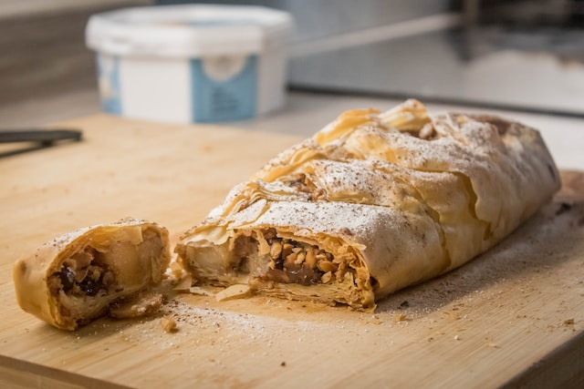

Strudel

Photo by Ben Stein on Unsplash
Ingredienti
- Mele ranette gr. 500
- Farina gr. 250
- Burro gr. 100
- Uvetta sultanina gr. 85
- Pinoli gr. 25
- Cannella in polvere 2 prese
- Raschiatura di un limone
- 1 uovo
- Latte
Preparazione:
- Ammassi la farina sulla spianatoia, faccia un vuoto nel mezzo, nel quale versi il burro sciolto ( una noce, non di più), un uovo, in pizzico di sale.
- Lavori la pasta aggiungendo il latte fino a formare una pasta piuttosto soda che dovrà lasciar riposare per circa 20 minuti.
- Faccia ammorbidire l'uvetta pelata e privata dei semi.
- Sbucci le mele, tolga i torsoli e le tagli a fette molto sottili.
- Tiri con la pasta una sfoglia molto sottile e, lasciando gli orli scoperti vi distenda sopra le fette di mele.
- Sparga l'uvetta sulle mele, unisca la raschiatura di limone, i pinoli, la cannella, lo zucchero ed il burro rimasto liquefatto preventivamente (ne avanzi un poco).
- Avvolga ora la sfoglia su se stessa per formare un rotolo ripieno che porrà su una teglia (possibilmente di rame) unta col burro.
- Col burro rimasto unga tutta la parte esterna del dolce.
- Metta in forno a 190°
- Lasci cuocere per circa un'ora.
- Serva lo strudel freddo, spolverizzato con zucchero a velo.